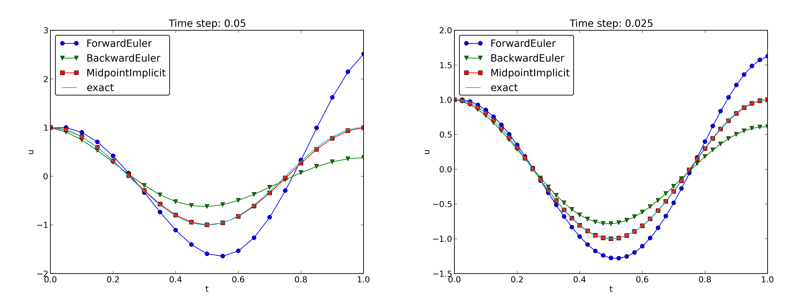
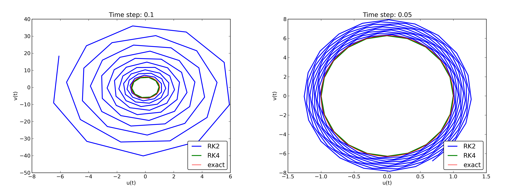

$$
\newcommand{\uex}{u_{\small\mbox{e}}}
\newcommand{\Aex}{A_{\small\mbox{e}}}
\newcommand{\half}{\frac{1}{2}}
\newcommand{\halfi}{{1/2}}
\newcommand{\ts}{\thinspace .}
\newcommand{\Ddt}[1]{\frac{D #1}{dt}}
\newcommand{\E}[1]{\hbox{E}\lbrack #1 \rbrack}
\newcommand{\Var}[1]{\hbox{Var}\lbrack #1 \rbrack}
\newcommand{\Std}[1]{\hbox{Std}\lbrack #1 \rbrack}
\newcommand{\xpoint}{\boldsymbol{x}}
\newcommand{\normalvec}{\boldsymbol{n}}
\newcommand{\Oof}[1]{{\cal O}(#1)}
\newcommand{\x}{\boldsymbol{x}}
\newcommand{\X}{\boldsymbol{X}}
\renewcommand{\u}{\boldsymbol{u}}
\renewcommand{\v}{\boldsymbol{v}}
\newcommand{\w}{\boldsymbol{w}}
\newcommand{\V}{\boldsymbol{V}}
\newcommand{\e}{\boldsymbol{e}}
\newcommand{\f}{\boldsymbol{f}}
\newcommand{\F}{\boldsymbol{F}}
\newcommand{\stress}{\boldsymbol{\sigma}}
\newcommand{\strain}{\boldsymbol{\varepsilon}}
\newcommand{\stressc}{{\sigma}}
\newcommand{\strainc}{{\varepsilon}}
\newcommand{\I}{\boldsymbol{I}}
\newcommand{\T}{\boldsymbol{T}}
% Unit vectors
\newcommand{\ii}{\boldsymbol{i}}
\newcommand{\jj}{\boldsymbol{j}}
\newcommand{\kk}{\boldsymbol{k}}
\newcommand{\ir}{\boldsymbol{i}_r}
\newcommand{\ith}{\boldsymbol{i}_{\theta}}
\newcommand{\iz}{\boldsymbol{i}_z}
% Index sets
\newcommand{\Ix}{{\cal I}_x}
\newcommand{\Iy}{{\cal I}_y}
\newcommand{\Iz}{{\cal I}_z}
\newcommand{\It}{{\cal I}_t}
\newcommand{\setb}[1]{{#1}^0} % set begin
\newcommand{\sete}[1]{{#1}^{-1}} % set end
%\newcommand{\setl}[1]{#1\setminus\{\set1{#1}\}}
%\newcommand{\setr}[1]{#1\setminus\{\set0{#1}\}}
%\newcommand{\seti}[1]{#1\setminus\{\set0{#1},\set1{#1}\}}
\newcommand{\setl}[1]{{#1}^-}
\newcommand{\setr}[1]{{#1}^+}
\newcommand{\seti}[1]{{#1}^i}
% Finite elements
\newcommand{\basphi}{\varphi}
\newcommand{\baspsi}{\psi}
\newcommand{\refphi}{\tilde\basphi}
\newcommand{\psib}{\boldsymbol{\psi}}
\newcommand{\sinL}[1]{\sin\left((#1+1)\pi\frac{x}{L}\right)}
\newcommand{\xno}[1]{x_{#1}}
%\newcommand{\xno}[1]{x^{(#1)}}
\newcommand{\Xno}[1]{X_{(#1)}}
\newcommand{\yno}[1]{y_{#1}}
\newcommand{\Yno}[1]{Y_{(#1)}}
\newcommand{\xdno}[1]{\boldsymbol{x}_{#1}}
% FEniCS commands
\newcommand{\dX}{\, \mathrm{d}X}
\newcommand{\dx}{\, \mathrm{d}x}
\newcommand{\ds}{\, \mathrm{d}s}
\newcommand{\Real}{\mathbb{R}}
\newcommand{\Integerp}{\mathbb{N}}
\newcommand{\Integer}{\mathbb{Z}}
$$
Study Guide: Vibration ODEs
Study Guide: Vibration ODEs
Hans Petter Langtangen [1, 2]
[1] Center for Biomedical Computing, Simula Research Laboratory
[2] Department of Informatics, University of Oslo
September 13, 2012
A simple vibration problem
$$
\begin{equation}
u''t) + \omega^2u = 0,\quad u(0)=I,\ u'(0)=0,\ t\in (0,T]
\thinspace .
\label{vib:model1}
\end{equation}
$$
Exact solution:
$$
\begin{equation}
u(t) = I\cos (\omega t)
\thinspace .
\label{vib:model1:uex}
\end{equation}
$$
\( u(t) \) oscillates with constant amplitude \( I \) and
(angular) frequency \( \omega \).
Period: \( P=2\pi/\omega \).
A centered finite difference scheme; step 1 and 2
- Strategy: follow the four steps of the finite difference method.
- Step 1: Introduce a time mesh, here uniform on \( [0,T] \).
- Step 2: Let the ODE be satisfied at each mesh point:
$$
\begin{equation}
u''(t_n) + \omega^2u(t_n) = 0,\quad n=1,\ldots,N_t
\thinspace .
\label{vib:model1:step2}
\end{equation}
$$
A centered finite difference scheme; step 3
Step 3: Approximate derivative(s) by finite
difference approximation(s).
Very common (standard!) formula:
$$
\begin{equation}
u''(t_n) \approx \frac{u^{n+1}-2u^n + u^{n-1}}{\Delta t^2}
\thinspace .
\label{vib:model1:step3}
\end{equation}
$$
Inserting \eqref{vib:model1:step3} in \eqref{vib:model1:step2}
yields
$$
\begin{equation}
\frac{u^{n+1}-2u^n + u^{n-1}}{\Delta t^2} = -\omega^2 u^n
\thinspace .
\label{vib:model1:step4a}
\end{equation}
$$
A centered finite difference scheme; step 4
Step 4: Formulate the computational algorithm.
Assume \( u^{n-1} \) and \( u^n \) are known, solve for unknown \( u^{n+1} \):
$$
\begin{equation}
u^{n+1} = 2u^n - u^{n-1} - \omega^2 u^n
\thinspace .
\label{vib:model1:step4}
\end{equation}
$$
Nick names for this scheme: Stormer's method or Verlet integration.
Computing the first step
- The formula breaks down for \( u^1 \) because \( u^{-1} \) is unknown and
outside the mesh!
- And: we have not used the initial condition \( u'(0)=0 \).
Discretize \( u'(0) \) by a centered difference
$$
\begin{equation}
\frac{u^1-u^{-1}}{2\Delta t} = 0\quad\Rightarrow\quad u^{-1} = u^1
\thinspace .
\end{equation}
$$
Inserted in \eqref{vib:model1:step4} for \( n=0 \) gives
$$
\begin{equation}
u^1 = u^0 - \half \Delta t^2 \omega^2 u^0
\thinspace .
\label{vib:model1:step4b}
\end{equation}
$$
The computational algorithm
- \( u^0=I \)
- compute \( u^1 \) from \eqref{vib:model1:step4b}
- for \( n=1,2,\ldots,N_t-1 \):
- compute \( u^{n+1} \) from \eqref{vib:model1:step4}
More precisly expressed in Python:
t = linspace(0, T, Nt+1) # mesh points in time
dt = t[1] - t[0] # constant time step.
u = zeros(Nt+1) # solution
u[0] = I
u[1] = u[0] - 0.5*dt**2*w**2*u[0]
for n in range(1, Nt):
u[n+1] = 2*u[n] - u[n-1] - dt**2*w**2*u[n]
Note: I (consistently) use w for \( \omega \) in code.
Operator notation; ODE
With \( [D_tD_t u]^n \) as the finite difference approximation to
\( u''(t_n) \) we can write
$$
\begin{equation}
[D_tD_t u + \omega^2 u = 0]^n
\thinspace .
\label{vib:model1:step4:op}
\end{equation}
$$
\( [D_tD_t u]^n \) means applying a central difference with step \( \Delta t/2 \) twice:
$$ [D_t(D_t u)]^n = \frac{[D_t u]^{n+1/2} - [D_t u]^{n-1/2}}{\Delta t}$$
which is written out as
$$
\frac{1}{\Delta t}\left(\frac{u^{n+1}-u^n}{\Delta t} - \frac{u^{n}-u^{n-1}}{\Delta t}\right) = \frac{u^{n+1}-2u^n + u^{n-1}}{\Delta t^2}
\thinspace .
$$
Operator notation; initial condition
$$
\begin{equation}
[u = I]^0,\quad [D_{2t} u = 0]^0,
\end{equation}
$$
where \( [D_{2t} u]^n \) is defined as
$$
\begin{equation}
[D_{2t} u]^n = \frac{u^{n+1} - u^{n-1}}{2\Delta t}
\thinspace .
\end{equation}
$$
Computing \( u' \)
\( u \) is often displacement/position, \( u' \) is velocity:
$$
\begin{equation}
u'(t_n) \approx \frac{u^{n+1}-u^{n-1}}{2\Delta t} = [D_{2t}u]^n
\thinspace .
\end{equation}
$$
Core algorithm
from numpy import *
from matplotlib.pyplot import *
def solver(I, w, dt, T):
"""
Solve u'' + w**2*u = 0 for t in (0,T], u(0)=I and u'(0)=0,
by a central finite difference method with time step dt.
"""
dt = float(dt)
Nt = int(round(T/dt))
u = zeros(Nt+1)
t = linspace(0, Nt*dt, Nt+1)
u[0] = I
u[1] = u[0] - 0.5*dt**2*w**2*u[0]
for n in range(1, Nt):
u[n+1] = 2*u[n] - u[n-1] - dt**2*w**2*u[n]
return u, t
Plotting
def exact_solution(t, I, w):
return I*cos(w*t)
def visualize(u, t, I, w):
plot(t, u, 'r--o')
t_fine = linspace(0, t[-1], 1001) # very fine mesh for u_e
u_e = exact_solution(t_fine, I, w)
hold('on')
plot(t_fine, u_e, 'b-')
legend(['numerical', 'exact'], loc='upper left')
xlabel('t')
ylabel('u')
dt = t[1] - t[0]
title('dt=%g' % dt)
umin = 1.2*u.min(); umax = -umin
axis([t[0], t[-1], umin, umax])
savefig('vib1.png')
savefig('vib1.pdf')
savefig('vib1.eps')
Main program
I = 1
w = 2*pi
dt = 0.05
num_periods = 5
P = 2*pi/w # one period
T = P*num_periods
u, t = solver(I, w, dt, T)
visualize(u, t, I, w, dt)
User interface: command line
import argparse
parser = argparse.ArgumentParser()
parser.add_argument('--I', type=float, default=1.0)
parser.add_argument('--w', type=float, default=2*pi)
parser.add_argument('--dt', type=float, default=0.05)
parser.add_argument('--num_periods', type=int, default=5)
a = parser.parse_args()
I, w, dt, num_periods = a.I, a.w, a.dt, a.num_periods
First steps for testing and debugging
- Testing very simple solutions:
\( u=\hbox{const} \) or \( u=ct + d \) do not apply here (without a force
term in the equation: \( u'' + \omega^2u = f \)).
- Hand calculations: calculate \( u^1 \) and \( u^2 \) and compare with program.
Checking convergence rates
The function below
- performs \( m \) simulations with halved time steps: \( 2^{-k}\Delta t \), \( k=0,\ldots,m-1 \),
- computes the \( L_2 \) norm of the error,
\( E = \sqrt{\Delta t_i\sum_{n=0}^{N_t-1}(u^n-\uex(t_n))^2} \) in each case,
- estimates the rates \( r_i \) from two consecutive
experiments \( (\Delta t_{i-1}, E_{i-1}) \) and \( (\Delta t_{i}, E_{i}) \),
assuming \( E_i=C\Delta t_i^{r_i} \) and \( E_{i-1}=C\Delta t_{i-1}^{r_i} \):
Implementational details
def convergence_rates(m, num_periods=8):
"""
Return m-1 empirical estimates of the convergence rate
based on m simulations, where the time step is halved
for each simulation.
"""
w = 0.35; I = 0.3
dt = 2*pi/w/30 # 30 time step per period 2*pi/w
T = 2*pi/w*num_periods
dt_values = []
E_values = []
for i in range(m):
u, t = solver(I, w, dt, T)
u_e = exact_solution(t, I, w)
E = sqrt(dt*sum((u_e-u)**2))
dt_values.append(dt)
E_values.append(E)
dt = dt/2
r = [log(E_values[i-1]/E_values[i])/
log(dt_values[i-1]/dt_values[i])
for i in range(1, m, 1)]
return r
Result: r contains values equal to 2.00 - as expected!
Nose test
Use final r[-1] in a unit test:
def test_convergence_rates():
r = convergence_rates(m=5, num_periods=8)
# Accept rate to 1 decimal place
nt.assert_almost_equal(r[-1], 2.0, places=1)
Complete code in vib_undamped.py.
Effect of the time step on long simulations
Figure 1: Effect of halving the time step.

Observations:
- The numerical solution seems to have right amplitude.
- There is a phase error which is reduced by reducing the time step.
- The total phase error seems to grow with time.
Using a moving plot window
- In long time simulations we need a plot window that follows
the solution.
- Method 1:
scitools.MovingPlotWindow.
- Method 2:
scitools.avplotter (ASCII vertical plotter).
Example:
Terminal> python vib_undamped.py --dt 0.05 --num_periods 40
Movie of the moving plot window.
Analysis of the numerical scheme
Deriving an exact numerical solution; ideas
- Linear, homogeneous, difference equation for \( u^n \).
- Has solutions \( u^n \sim A^n \), where \( A \) is unknown (number).
- Here: \( \uex(t) =I\cos(\omega t) \sim I\exp{(i\omega t)} = I(\exp{(i\omega\Delta t)}^n \)
- Trick for simplifying the algebra: \( A=\exp{(i\tilde\omega\Delta t)} \) (ansatz)
- \( \tilde\omega \): unknown numerical frequency (easier to calculate than \( A \))
- \( \omega - \tilde\omega \) is the phase error
- Use the real part as the physical relevant part of a complex expression
Deriving an exact numerical; calculations (1)
$$
A^n = \exp{(\tilde\omega \Delta t\, n)}=\exp{(\tilde\omega t)} =
\cos (\tilde\omega t) + i\sin(\tilde \omega t)
\thinspace .
$$
$$
\begin{align*}
[D_tD_t u]^n &= \frac{\exp{(i\tilde\omega(t+\Delta t))} - 2\exp{(i\tilde\omega t)} + \exp{(i\tilde\omega(t-\Delta t))}}{\Delta t^2}\\
&= \exp{(i\tilde\omega t)}\frac{1}{\Delta t^2}\left(\exp{(i\tilde\omega(\Delta t))} + \exp{(i\tilde\omega(-\Delta t))} - 2\right)\\
&= \exp{(i\tilde\omega t)}\frac{2}{\Delta t^2}\left(\cosh(i\tilde\omega\Delta t) -1 \right)\\
&= \exp{(i\tilde\omega t)}\frac{2}{\Delta t^2}\left(\cos(\tilde\omega\Delta t) -1 \right)\\
&= -\exp{(i\tilde\omega t)}\frac{4}{\Delta t^2}\sin^2(\frac{\tilde\omega\Delta t}{2})
\end{align*}
$$
Deriving an exact numerical; calculations (2)
The scheme \eqref{vib:model1:step4}
with \( u^n=\exp{(i\omega\tilde\Delta t\, n)} \) inserted gives
$$
\begin{equation}
-\exp{(i\tilde\omega t)}\frac{4}{\Delta t^2}\sin^2(\frac{\tilde\omega\Delta t}{2})
+ \omega^2 \exp{(i\tilde\omega t)} = 0,
\end{equation}
$$
which after dividing by \( \exp{(i\tilde\omega t)} \) results in
$$
\begin{equation}
\frac{4}{\Delta t^2}\sin^2(\frac{\tilde\omega\Delta t}{2}) = \omega^2
\thinspace .
\end{equation}
$$
Solve for \( \tilde\omega \):
$$
\begin{equation}
\tilde\omega = \pm \frac{2}{\Delta t}\sin^{-1}\left(\frac{\omega\Delta t}{2}\right)
\thinspace .
\label{vib:model1:tildeomega}
\end{equation}
$$
- Phase error because \( \tilde\omega \neq \omega \).
- But how good is the approximation \( \tilde\omega \) to \( \omega \)?
Polynomiaaal approximation of the phase error
Taylor series expansion
for small \( \omega\Delta t \) gives a formula that is easier to understand:
>>> from sympy import *
>>> dt, w = symbols('dt w')
>>> w_tilde = asin(w*dt/2).series(dt, 0, 4)*2/dt
>>> print w_tilde
(dt*w + dt**3*w**3/24 + O(dt**4))/dt
$$
\begin{equation}
\tilde\omega = \omega\left( 1 + \frac{1}{24}\omega^2\Delta t^2\right) + {\cal O}(\Delta t^3)
\thinspace .
\label{vib:model1:tildeomega:series}
\end{equation}
$$
Plot of the phase error
Figure 2: Exact discrete frequency and its second-order series expansion.

Exact discrete solution
$$
\begin{equation}
u^n = I\cos\left(\tilde\omega n\Delta t\right),\quad
\tilde\omega = \frac{2}{\Delta t}\sin^{-1}\left(\frac{\omega\Delta t}{2}\right)
\thinspace .
\label{vib:model1:un:exact}
\end{equation}
$$
Ideal for verification and analysis!
Stability
- We have observed constant amplitude (desired!), but phase error.
- Constant amplitude: \( \sin \) is real-valued \( \Rightarrow\quad \tilde\omega \)
is real-valued.
- What if \( \tilde\omega \) is complex?
- \( \sin^{-1}(x) \) is complex if \( |x|>1 \).
- Complex \( \tilde\omega = \tilde\omega_r + i\tilde\omega_i \).
- Since \( \sin^{-1}(x) \) has a negative imaginary part for
\( x>1 \), it means that
\( \exp{(i\omega\tilde t)}=\exp{(-\tilde\omega_i t)}\exp{(i\tilde\omega_r t)} \)
will lead to exponential growth in time because \( \tilde\omega_i <0 \) and hence
\( -\tilde\omega_i t > 0 \).
Cannot tolerate growth and must therefore demand a stability criterion
$$
\begin{equation}
\frac{\omega\Delta t}{2} \leq 1\quad\Rightarrow\quad
\Delta t \leq \frac{2}{\omega}
\thinspace .
\end{equation}
$$
Figure 3
displays what happens when \( \Delta t =\pi^{-1} + 9.01\cdot
10^{-5} \) (\( \pi^{-1} \) is the stability limit).
Figure 3: Growing, unstable solution because of a time step slightly beyond the stability limit.

From the analysis we can draw three important conclusions:
- The key parameter in the formulas is \( p=\omega\Delta t \).
The period of oscillations is \( P=2\pi/\omega \), and the
number of time steps per period is \( N_P=P/\Delta t \).
Therefore, \( p=\omega\Delta t = 2\pi N_P \), showing that the
critical parameter is the number of time steps per period.
The smallest possible \( N_P \) is 2, showing that \( p\in (0,\pi] \).
- Provided \( p\leq 2 \), the amplitude if the numerical solution is
constant.
- The numerical solution exhibits a relative phase error
\( \tilde\omega/\omega \approx 1 + \frac{1}{24}p^2 \).
This error leads to wrongly displaced peaks of the numerical
solution, and the error in peak location grows linearly with time.
Alternative schemes based on 1st-order equations
Standard technique for \( u'' + ... \) (and any higher-order ODE):
rewrite as first-order system.
Here:
$$
\begin{align}
u' &= v,
\label{vib:model2:ueq}\\
v' &= -\omega^2 u
\label{vib:model2:veq}
\thinspace .
\end{align}
$$
Initial conditions: \( u(0)=I \) and \( v(0)=0 \).
Standard methods for 1st-order ODE systems
The Forward Euler scheme
$$ [D_t^+ u = v]^n,$$
$$ [D_t^+ v = -\omega^2 u]^n,$$
or written out,
$$
\begin{align}
u^{n+1} &= u^n + \Delta t v^n,\\
v^{n+1} &= v^n -\Delta t \omega^2 u^n
\thinspace .
\end{align}
$$
The Backward Euler scheme
$$ [D_t^- u = v]^{n+1},$$
$$ [D_t^- v = -\omega u]^{n+1} \thinspace . $$
Written out:
$$
\begin{align}
u^{n+1} - \Delta t v^{n+1} = u^{n},\\
v^{n+1} + \Delta t \omega^2 u^{n+1} = v^{n}
\thinspace .
\end{align}
$$
This is a coupled \( 2\times 2 \) system for the new values!
The Crank-Nicolson scheme
$$
[D_t u = \overline{v}^t]^{n+\frac{1}{2}},$$
$$
[D_t v = -\omega \overline{u}^t]^{n+\frac{1}{2}}$$
Also a coupled system:
$$
\begin{align}
u^{n+1} - \frac{1}{2}\Delta t v^{n+1} &= u^{n} + \frac{1}{2}\Delta t v^{n},\\
v^{n+1} + \frac{1}{2}\Delta t \omega^2 u^{n+1} &= v^{n}
- \frac{1}{2}\Delta t \omega^2 u^{n}
\thinspace .
\end{align}
$$
Comparison of schemes
Can use
Odespy to compare many methods
for first-order schemes:
import odespy
import numpy as np
def f(u, t, w=1):
# u is array of length 2 holding our [u, v]
u, v = u
return [v, -w**2*u]
def run_solvers_and_plot(solvers, timesteps_per_period=20,
num_periods=1, I=1, w=2*np.pi):
P = 2*np.pi/w # one period
dt = P/timesteps_per_period
Nt = num_periods*timesteps_per_period
T = Nt*dt
t_mesh = np.linspace(0, T, Nt+1)
legends = []
for solver in solvers:
solver.set(f_kwargs={'w': w})
solver.set_initial_condition([I, 0])
u, t = solver.solve(t_mesh)
Forward Euler, Backward Euler, and
Crank-Nicolson (MidpointImplicit in Odespy) are first out:
solvers = [
odespy.ForwardEuler(f),
# Implicit methods must use Newton solver to converge
odespy.BackwardEuler (f, nonlinear_solver='Newton'),
odespy.MidpointImplicit(f, nonlinear_solver='Newton'),
]
Two plot types:
- \( u(t) \)
- Parameterized curve \( (u(t), v(t)) \) in phase space (exact: \( (I\cos\omega t, -\omega I\sin\omega t) \) = ellipse)
- Note: The curve \( (u(t), v(t)) \) is closed and periodic (\( P=2\pi/\omega \))
Figure 4: Comparison of classical schemes in the phase plane.

Figure 5: Comparison of classical schemes.

Observations:
- Forward Euler has growing amplitude and outward \( (u,v) \) spiral - pumps
energy into the system.
- Backward Euler is opposite: decreasing amplitude, inward sprial,
extracts energy.
- Forward and Backward Euler are useless for vibrations.
- Crank-Nicolson (MidpointImplicit) looks much better.
Figure 6: Comparison of Runge-Kutta schemes in the phase plane.

Figure 7: Comparison of Runge-Kutta schemes.

Figure 8: Long-time behavior of Runge-Kutta schemes in the phase plane.

Figure 9: Long-time behavior of Runge-Kutta schemes.

Figure 10: Long-time behavior of the Crank-Nicolson scheme in the phase plane.

Figure 11: Long-time behavior of the Crank-Nicolson scheme.

Observations:
- 4th-order Runge-Kutta is very accurate, also for large \( \Delta t \).
- 2th-order Runge-Kutta has almost as big problems as Forward and Backward
Euler.
- Crank-Nicolson is accurate, but the amplitude is not as accurate
as Stormer/Verlet.
The Euler-Cromer method
Forward-backward discretization:
- Update \( u \) with Forward Euler
- Update \( v \) with Backward Euler, using latest \( u \)
$$ [D_t^+u = v]^n,$$
$$ [D_t^-v = -\omega u]^{n+1}
\thinspace .
$$
Written out:
$$
\begin{align}
u^{n+1} &= u^n + \Delta t v^n,
\label{vib:model2:EulerCromer:ueq1}\\
v^{n+1} &= v^n -\Delta t \omega^2u^{n+1}
\label{vib:model2:EulerCromer:veq1}
\thinspace .
\end{align}
$$
Names: Forward-backward scheme, Semi-implicit Euler method, symplectic
Euler, semi-explicit Euler, Newton-Stormer-Verlet, and Euler-Cromer.
Forward Euler and Backward Euler are both \( \Oof{\Delta t)} \)
approximations. What about the overall scheme? Expect \( \Oof{\Delta t} \)...
Equivalence with the scheme for the second-order ODE
Eliminate \( v^n \):
From \eqref{vib:model2:EulerCromer:veq1}:
$$ v^n = v^{n-1} - \Delta t \omega^2u^{n},
$$
which can be inserted in \eqref{vib:model2:EulerCromer:ueq1} to yield
$$
\begin{equation}
u^{n+1} = u^n + \Delta t v^{n-1} - \Delta t^2 \omega^2u^{n} .
\label{vib:model2:EulerCromer:elim1}
\end{equation}
$$
Using \eqref{vib:model2:EulerCromer:ueq1},
$$ v^{n-1} = \frac{u^n - u^{n-1}}{\Delta t},
$$
and when this is inserted in \eqref{vib:model2:EulerCromer:elim1} we get
$$
\begin{equation}
u^{n+1} = 2u^n - u^{n-1} - \Delta t^2 \omega^2u^{n},
\end{equation}
$$
which is nothing but the centered scheme \eqref{vib:model1:step4}!
The previous analysis of this scheme then also applies to the Euler-Cromer
method!
The initial condition \( u'=0 \):
$$ u'=v=0\quad\Rightarrow\quad v^0=0,$$
and
\eqref{vib:model2:EulerCromer:ueq1} implies \( u^1=u^0 \), while
\eqref{vib:model2:EulerCromer:veq1} says \( v^1=-\omega^2 u^0 \).
This \( u^1=u^0 \) approximation
corresponds to a first-order Forward Euler discretization
of \( u'(0)=0 \): \( [D_t^+ u = 0]^0 \).
←
→